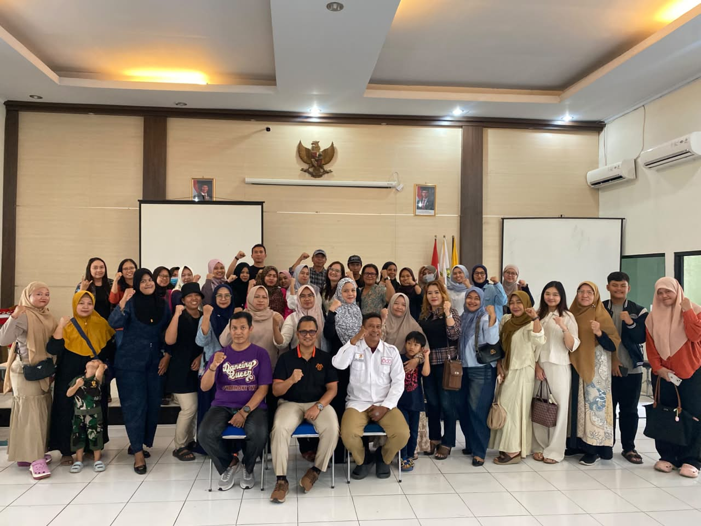
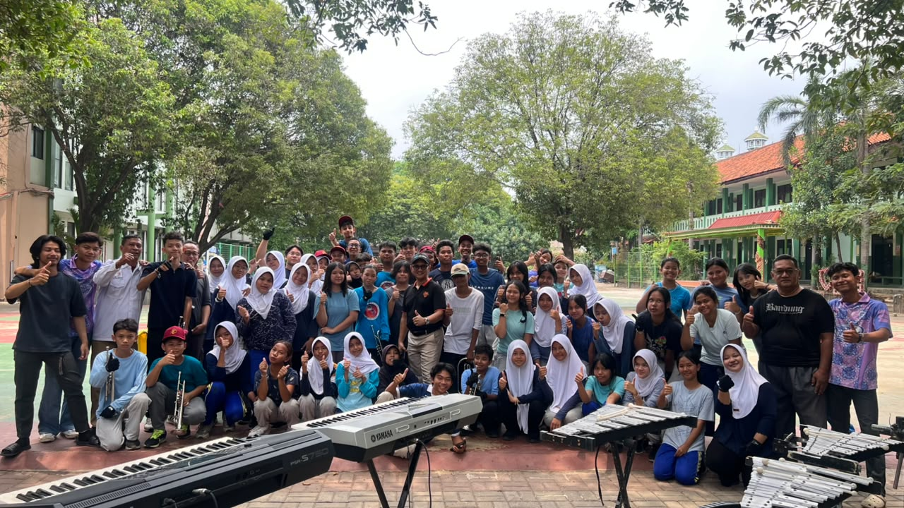
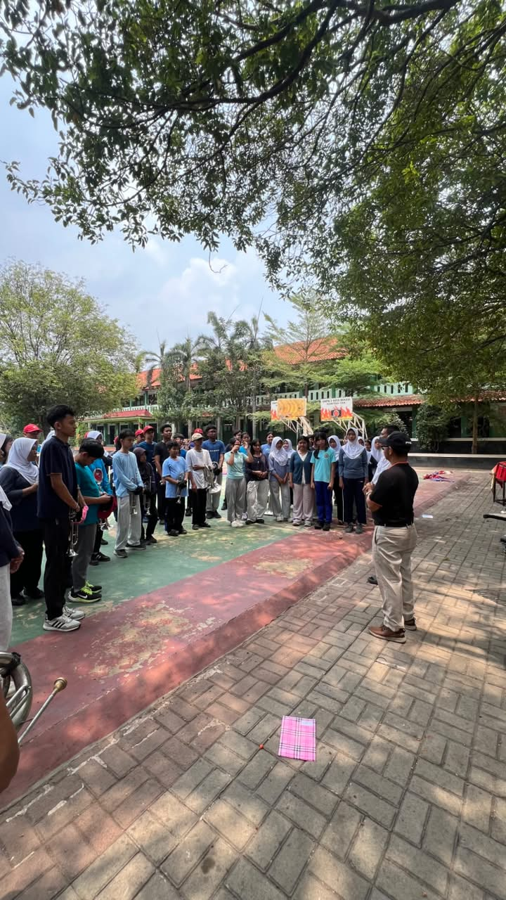

Dokumentasi
Galeri Kegiatan




Lihat lebih banyak kegiatan kami di Instagram
Lihat di InstagramIndonesia Drum Corps Association
Wadah pengembangan seni marching band dan drum corps di Kota Bekasi. Menyatukan passion, disiplin, dan kreativitas untuk prestasi yang mengharumkan nama kota.
Indonesia Drum Corps Association (IDCA) Kota Bekasi adalah bagian dari organisasi nasional IDCA yang bertugas mengembangkan seni marching band dan drum corps di wilayah Kota Bekasi.
Organisasi ini berada di bawah naungan KORMI Kota Bekasi dan aktif berpartisipasi dalam berbagai kegiatan olahraga masyarakat, festival budaya, serta kompetisi tingkat regional maupun nasional.
Dengan semangat kebersamaan dan disiplin tinggi, IDCA Kota Bekasi menjadi wadah bagi para pecinta marching band untuk Berkembang, berprestasi, dan mengharumkan nama Kota Bekasi.
Kota Bekasi, Jawa Barat
KORMI Kota Bekasi
IDCA Nasional & DCI International
idcakotabekasi@gmail.com
Struktur pengurus IDCA Kota Bekasi akan segera diresmikan dan diumumkan melalui channel resmi kami.
Ikuti Instagram KamiSMPN 2 Kota Bekasi
Unit marching band SMP Negeri 2 Kota Bekasi yang aktif berkompetisi di berbagai ajang daerah.
SMPN 12 Kota Bekasi
Marching band SMP Negeri 12 dengan prestasi membanggakan di tingkat Kota dan Provinsi.
Alexandria Islamic School
Marching band dari Alexandria Islamic School, Bekasi. Aktif di FORKOT dan event kota.
Gita Symphonia Drum Corps
Unit drum corps senior Kota Bekasi yang berlaga di IDCI 2024 Tangerang.
Ingin bergabung? Hubungi kami melalui Instagram atau email.
Daftar SekarangIDCA Kota Bekasi hadir dalam pelantikan pengurus provinsi di Bandung, 24 Agustus 2022.
Perwakilan IDCA Kota Bekasi menghadiri raker provinsi di Bandung, 7 Februari 2023.
Mengadakan lomba marching band di GO! Wet Waterpark untuk kalangan anak-anak.
GSC DC Kota Bekasi tampil di Indonesia Drum Corps International 2024 di Benteng Reborn Stadium, Tangerang (1-4 Agustus 2024).
PDBI Kota Bekasi mengikuti 3 nomor: Street Parade, Sound Sport Senior, dan Flag Ensemble Elementary di Tangerang.
IDCA terlibat dalam penyelenggaraan JDCI 2025 di Jakarta International Velodrome (19-21 Desember 2025).
Kota Bekasi sebagai tuan rumah Porprov 2026. IDCA bersiap menjadi bagian dari kompetisi marching band Porprov.
Festival Olahraga Kota Bekasi — ajang kompetisi dan penampilan marching band tingkat kota.
Acara perayaan HUT Kota Bekasi dengan Parade Enerik Ceria yang diramaikan oleh IDCA Kota Bekasi.
Raker IDCA Jawa Barat — koordinasi dan perencanaan kegiatan tingkat provinsi di Bandung.
Koordinasi bersama induk organisasi olahraga di bawah naungan KORMI Kota Bekasi.
Car Free Day Ahmad Yani — meramaikan aktivitas olahraga rakyat setiap minggu di Kota Bekasi.
Indonesia Drum Corps International / Jakarta Drum Corps International — kompetisi bergengsi tingkat nasional & internasional.
Street Parade Senior Class di Benteng Reborn Stadium, Tangerang (1-4 Agustus 2024)
Buka di YouTubePenampilan Marching Band Alexandria Islamic School di Festival Olahraga Kota Bekasi
Buka di YouTubeLihat lebih banyak video kegiatan kami di channel YouTube resmi.
Cari di YouTubeKomite Olahraga Rekreasi Masyarakat Indonesia Kota Bekasi — naungan resmi IDCA Kota Bekasi.
InstagramIndonesia Drum Corps Association — organisasi induk nasional yang menaungi IDCA seluruh provinsi.
WebsiteDCI — organisasi internasional yang menjadi afiliasi IDCA. Arena kompetisi marching band terbesar di dunia.
WebsiteKomite Olahraga Nasional Indonesia Kota Bekasi — mitra dalam pembinaan atlet drumband untuk Porprov.
WebsiteIDCA (Indonesia Drum Corps Association) adalah organisasi nasional yang bergerak di bidang seni marching band dan drum corps. IDCA merupakan afiliasi resmi dari Drum Corps International (DCI) Amerika Serikat dan berada di bawah naungan KORMI Indonesia.
Anda dapat menghubungi kami melalui Instagram @idcakotabekasi atau email ke idcakotabekasi@gmail.com. Tim kami akan memberikan informasi mengenai proses pendaftaran, jadwal latihan, dan ketentuan yang berlaku.
Saat ini unit yang aktif meliputi D'HARMONY TWO (SMPN 2), SWARA GITA MUSIKA (SMPN 12), ALEXANDRIA MARCHING BAND CORPS, dan GSC DC Kota Bekasi. Terbuka untuk formasi baru dari sekolah-sekolah di Kota Bekasi.
Kategori lomba meliputi: Street Parade (parade jalanan), Sound Sport (pertunjukan musik & visual), Drumline Battle (pertarungan ritme), Flag Ensemble (color guard), dan Individual Contest (Drumset, Brass, Percussion, Mayoret, Field Commander).
Ya! IDCA Kota Bekasi terbuka untuk seluruh masyarakat Kota Bekasi yang tertarik dalam seni marching band, baik sebagai anggota unit, pelatih, maupun sponsor. Silakan hubungi kami untuk informasi lebih lanjut.
Kegiatan rutin meliputi latihan mingguan tiap unit, rapat koordinasi bulanan, dan partisipasi dalam event seperti FORKOT, CFD Bekasi, serta kompetisi IDCI/JDCI. Jadwal detail dapat dilihat di Instagram resmi kami.



Lihat lebih banyak kegiatan kami di Instagram
Lihat di InstagramKota Bekasi, Jawa Barat
Indonesia